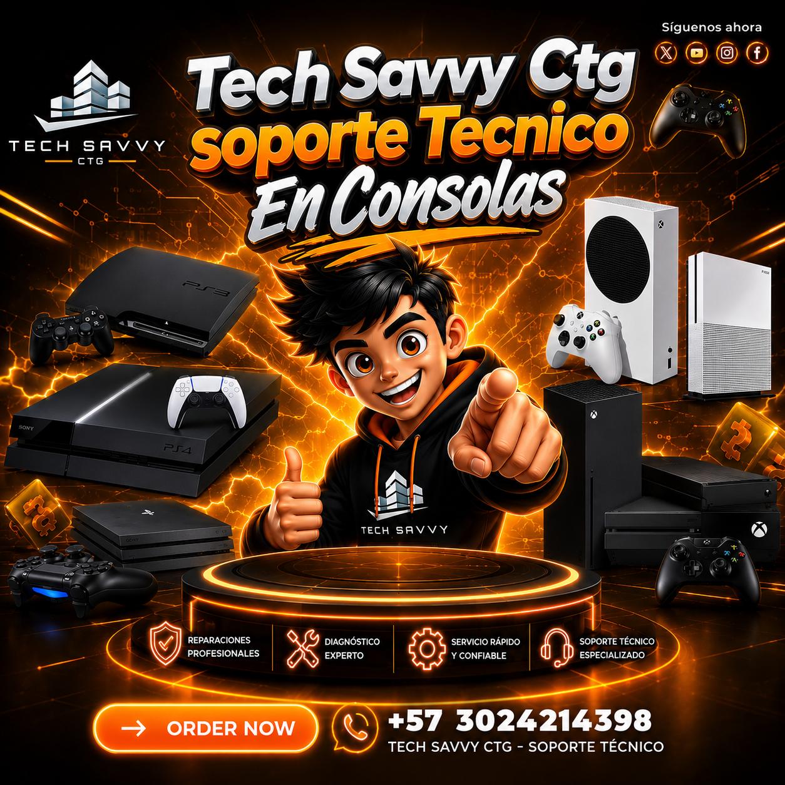

Limpieza y mantenimiento
Limpieza interna, cambio de pasta térmica y revisión de ventilación para ayudar a prevenir sobrecalentamientos.
 TECH SAVVYCTG SAS · CONSOLASAgendar revisión
TECH SAVVYCTG SAS · CONSOLASAgendar revisión Diagnóstico, mantenimiento y reparación para PlayStation, Xbox y Nintendo. Tratamos cada equipo con criterio técnico y repuestos de calidad.

Revisamos el origen de la falla y recomendamos la solución adecuada para su consola.
Limpieza interna, cambio de pasta térmica y revisión de ventilación para ayudar a prevenir sobrecalentamientos.
Diagnóstico de unidades de disco, almacenamiento, puertos y problemas de reconocimiento de juegos.
Revisión de conectividad, puertos HDMI, mandos, alimentación y configuración básica del sistema.
Indique la plataforma, modelo y síntoma.
Evaluamos el equipo y la causa de la falla.
Le presentamos el diagnóstico antes de proceder.
Verificamos el funcionamiento antes de entregar.
Solicite una revisión especializada y conozca las opciones de servicio.
Describa la falla de su consola. Un asesor confirmará el ingreso del equipo y la disponibilidad de atención.